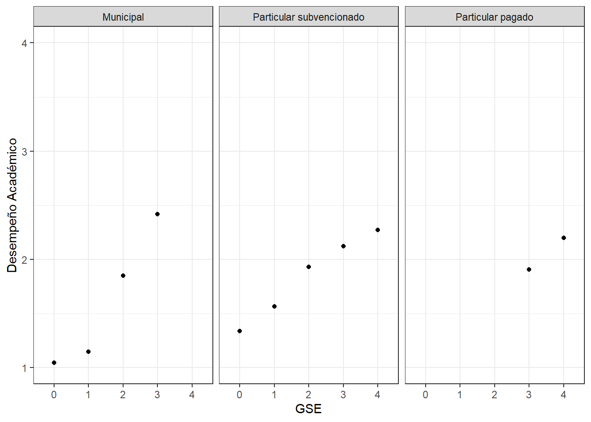

Mercantilización del sistema educativo y segregación escolar en Chile
Introducción
(Trabajo 01)
Cómo se mencionó en la primera entrega1, la mercantilización del sistema educativo en el país comienza con las reformas neoliberales implementadas en dictadura, las cuales debilitaron el sistema educativo estatal promoviendo los fines de lucro y la competencia individual, a pesar de nuevas reformas, estas no han generado cambios sustanciales en las politicas educativas las cuales han llevado a una extrema privatización de la educación, la cual ha fomentado la segregación y desigualdad de oportunidades educativas en Chile.
La segregación escolar se refiere a la distribución desigual de los estudiantes en las escuelas según sus características socioeconómicas o culturales. En Chile, la segregación se evidencia tanto en la facultad que tienen los establecimientos para seleccionar estudiantes como en la libertad de elección de los padres, libertad teórica, ya que en la práctica, esta elección puede estar limitada por factores socioeconómicos y culturales, lo que lleva a la concentración de ciertos grupos en determinadas escuelas.
Las brechas educativas han aumentado debido a la naturaleza del sistema educacional actual, el cual reproduce las desigualdades preexistentes en el país. La idea principal de esta investigación se centra en cómo las prácticas de privatización han fomentado la segregación escolar, tomando los datos disponibles que entrega la Agencia de la Calidad de la Educación de la prueba SIMCE 2017 2° medio , seleccionando las variables que podrían reflejar mejor este fenómeno.
Análisis descriptivo
(Trabajo 02)
SIMCE es una evaluación cuyo objetivo es conocer los resultados educativos de los establecimientos, evaluando el logro de los contenidos y habilidades del Currículum Nacional, recogiendo información sobre el contexto educativo a través de cuestionarios que responden directores(as), docentes, estudiantes, padres, madres y apoderados, de modo de analizar los resultados en forma integral.
La segunda entrega de este curso2 contó con la generación de una nueva base de datos a partir de las bases originales del proceso SIMCE 2017 para los cursos de 2° medio a nivel país, junto a la selección, procesamiento y analisis descriptivo de las variables relevantes para el informe, las cuales son:
VARIABLE 2: “cod_grupo” = Código de grupo socioeconómico (Bajo(1);Medio bajo(2);Medio(3);Medio alto(4);Alto(5))
VARIABLE 3: “cdm_2017” = Categoría de Desempeño 2017 (INSUFICIENTE(1), MEDIO-BAJO(2), MEDIO(3) Y ALTO(4))
Se destacó que la mayoría de los establecimientos tienen un desempeño académico medio, seguido por un desempeño medio-bajo. En cuanto al tipo de establecimiento una gran mayoria son del tipo municipal subvencionado. En relación con el GSE más del 50% de establecimientos se encuentran entre el Medio y el Bajo. Se incluyen gráficos que muestran la distribución de las categorías de desempeño y del tipo de establecimiento. En el primer gráfico se observa una distribución desigual entre las categorías, destacando el desempeño medio como el más común. En el segundo gráfico, se destaca la minoría de colegios particulares pagados en comparación con los subvencionados.
pacman::p_load(dplyr, sjmisc, car, sjlabelled, stargazer, haven, kableExtra, sjPlot, summarytools, ggplot2)rm(list=ls()) options(scipen=999) load("~/Universidad/UAH 5° Semestre/OFC R para análisis estadístico/Trabajos/input/data-proc/simce2m2017_final.RData")#| label: fig-cdm_2017#| fig-cap: “Categorías de Desempeño”graph1 <- simce2m2017_final %>%ggplot(aes(x = cdm_2017)) +geom_bar(fill ="coral")+labs(title ="Categoría de Desempeño 2017",x ="Categoría de Desempeño",y ="Frecuencia") +theme_bw()graph1
Para el trabajo 02 se realizó la preparación de los datos y se generaron 2 bases (la 1ra incluye los casos NA y la 2da no) simce2m2017_total.RData y simce2m2017_final.Rdata
Revisamos que los NA no sean más del 10% para ver si podemos hacer el análisis con casos completos, luego de eso tenemos que sólo el 3.859527% del total son casos perdidos lo cual no supone problemas para trabajar con la base “simce2m2017_final.RData”3
pacman::p_load(dplyr, sjmisc, sjPlot, sjlabelled, kableExtra, GGally, corrplot, tidyverse, car, haven, summarytools, psych)rm(list=ls()) options(scipen=999)#Carga de la base de datosload("~/Universidad/UAH 5° Semestre/OFC R para análisis estadístico/Trabajos/input/data-proc/simce2m2017_total.RData")load("~/Universidad/UAH 5° Semestre/OFC R para análisis estadístico/Trabajos/input/data-proc/simce2m2017_final.RData")dim(simce2m2017_total)
[1] 2876 3
dim(simce2m2017_final)
[1] 2765 3
2876-2765
[1] 111
111/2876*100
[1] 3.859527
load("~/Universidad/UAH 5° Semestre/OFC R para análisis estadístico/Trabajos/input/data-proc/simce2m2017_final.RData")dim(simce2m2017_final)
simce2m2017_finalnum <- simce2m2017_finalsave(simce2m2017_finalnum,file ="C:/Users/nachi/OneDrive/Documentos/Universidad/UAH 5° Semestre/OFC R para análisis estadístico/Trabajos/input/data-proc/simce2m2017_finalnum.RData")load("~/Universidad/UAH 5° Semestre/OFC R para análisis estadístico/Trabajos/input/data-proc/simce2m2017_finalnum.RData")dim(simce2m2017_finalnum)
save(simce2m2017_finalnum,file ="C:/Users/nachi/OneDrive/Documentos/Universidad/UAH 5° Semestre/OFC R para análisis estadístico/Trabajos/input/data-proc/simce2m2017_finalnum.RData")load("~/Universidad/UAH 5° Semestre/OFC R para análisis estadístico/Trabajos/input/data-proc/simce2m2017_finalnum.RData")frq(simce2m2017_finalnum)
Segregación Socioeconómica en el Sistema Educativo:
Colegios Municipales: Predominantemente, los estudiantes de colegios municipales pertenecen a los GSE más bajos (64% en GSE bajo y 35.8% en GSE medio bajo).
Colegios Particulares Subvencionados: Tienen una mezcla más amplia de estudiantes de diferentes GSE, pero con una mayor proporción de GSE medio (86.6%) y medio alto (90.5%).
Colegios Particulares Pagados: Prácticamente todos los estudiantes pertenecen al GSE alto (94%).
Esto muestra una clara segregación socioeconómica, donde los estudiantes de niveles socioeconómicos bajos asisten principalmente a colegios municipales, y los estudiantes de niveles socioeconómicos altos asisten principalmente a colegios particulares pagados.
Tabla 1: Código de Dependencia y Grupo Socioeconómico (GSE)
Esta tabla muestra la distribución del grupo socioeconómico (GSE) entre los diferentes tipos de colegios (municipal, particular subvencionado y particular pagado).
Municipal:
64% de los estudiantes en colegios municipales pertenecen al GSE bajo.
35.8% pertenecen al GSE medio bajo.
13.2% pertenecen al GSE medio.
3.3% pertenecen al GSE medio alto.
0% pertenecen al GSE alto.
Particular subvencionado:
36% de los estudiantes en colegios particulares subvencionados pertenecen al GSE bajo.
64.2% pertenecen al GSE medio bajo.
86.6% pertenecen al GSE medio.
90.5% pertenecen al GSE medio alto.
6% pertenecen al GSE alto.
Particular pagado:
0% de los estudiantes en colegios particulares pagados pertenecen al GSE bajo o medio bajo.
0.2% pertenecen al GSE medio.
6.1% pertenecen al GSE medio alto.
94% pertenecen al GSE alto.
Interpretación: La tabla muestra una clara segregación socioeconómica en los colegios chilenos. Los colegios municipales tienen una alta concentración de estudiantes de GSE bajo y medio bajo, mientras que los colegios particulares pagados tienen una alta concentración de estudiantes de GSE alto. Esto indica que los estudiantes de mayor nivel socioeconómico tienden a asistir a colegios particulares pagados, mientras que los estudiantes de niveles socioeconómicos más bajos asisten mayoritariamente a colegios municipales.
Desigualdad en el Desempeño Académico según Dependencia Escolar:
Colegios Municipales: Mayor proporción de estudiantes con desempeño insuficiente (56.3%) y medio-bajo (43.1%).
Colegios Particulares Subvencionados: Predominan en categorías de desempeño medio (68.8%) y alto (56.2%), aunque también tienen una proporción considerable en categorías más bajas.
Colegios Particulares Pagados: Mayor proporción de estudiantes con desempeño alto (31.9%) y menor proporción con desempeño insuficiente (7.5%).
Esta distribución indica que los colegios particulares pagados tienen un desempeño académico significativamente mejor que los colegios municipales, con los particulares subvencionados ubicándose en una posición intermedia.
Tabla 2: Código de Dependencia y Categoría de Desempeño
Esta tabla muestra cómo se distribuyen las categorías de desempeño (INSUFICIENTE, MEDIO-BAJO, MEDIO, ALTO) entre los distintos tipos de colegios.
Municipal:
56.3% de los estudiantes tienen un desempeño insuficiente.
43.1% tienen un desempeño medio-bajo.
17.6% tienen un desempeño medio.
11.9% tienen un desempeño alto.
Particular subvencionado:
36.1% de los estudiantes tienen un desempeño insuficiente.
53.5% tienen un desempeño medio-bajo.
68.8% tienen un desempeño medio.
56.2% tienen un desempeño alto.
Particular pagado:
7.5% de los estudiantes tienen un desempeño insuficiente.
3.5% tienen un desempeño medio-bajo.
13.6% tienen un desempeño medio.
31.9% tienen un desempeño alto.
Interpretación: La tabla muestra una desigualdad en el desempeño académico entre los tipos de colegios. Los estudiantes en colegios municipales tienen una mayor probabilidad de tener un desempeño insuficiente o medio-bajo, mientras que los estudiantes en colegios particulares pagados tienen una mayor probabilidad de tener un desempeño alto. Esto sugiere que los colegios particulares pagados, que tienen una mayor concentración de estudiantes de GSE alto, también tienen un mejor desempeño académico en comparación con los colegios municipales.
GSE Bajo y Medio Bajo: Alta proporción de estudiantes con desempeño insuficiente (38.6% en GSE bajo y 40.7% en GSE medio bajo) y medio-bajo (37.8% en GSE bajo y 38% en GSE medio bajo).
GSE Medio y Medio Alto: Menor proporción de desempeño insuficiente y mayor proporción de desempeño medio y alto.
GSE Alto: Alta proporción de estudiantes con desempeño alto (32.9%) y baja proporción con desempeño insuficiente (6.9%).
La relación entre el GSE y el desempeño académico es clara: a medida que el GSE aumenta, la proporción de estudiantes con desempeño académico alto también aumenta, mientras que la proporción de estudiantes con desempeño insuficiente disminuye.
Tabla 3: Grupo Socioeconómico (GSE) y Categoría de Desempeño
Esta tabla muestra la relación entre el nivel socioeconómico de los estudiantes y su desempeño académico.
GSE Bajo:
38.6% de los estudiantes tienen un desempeño insuficiente.
37.8% tienen un desempeño medio-bajo.
15.1% tienen un desempeño medio.
1.9% tienen un desempeño alto.
GSE Medio bajo:
40.7% de los estudiantes tienen un desempeño insuficiente.
38% tienen un desempeño medio-bajo.
26% tienen un desempeño medio.
13.8% tienen un desempeño alto.
GSE Medio:
11.1% de los estudiantes tienen un desempeño insuficiente.
16.4% tienen un desempeño medio-bajo.
28.5% tienen un desempeño medio.
30.1% tienen un desempeño alto.
GSE Medio alto:
2.7% de los estudiantes tienen un desempeño insuficiente.
4.7% tienen un desempeño medio-bajo.
16.9% tienen un desempeño medio.
21.4% tienen un desempeño alto.
GSE Alto:
6.9% de los estudiantes tienen un desempeño insuficiente.
3.2% tienen un desempeño medio-bajo.
13.5% tienen un desempeño medio.
32.9% tienen un desempeño alto.
Interpretación: La tabla muestra que hay una fuerte relación entre el nivel socioeconómico y el desempeño académico. Los estudiantes de GSE bajo tienen una mayor probabilidad de tener un desempeño insuficiente o medio-bajo, mientras que los estudiantes de GSE alto tienen una mayor probabilidad de tener un desempeño alto. Esto sugiere que el nivel socioeconómico es un factor importante en el desempeño académico, con estudiantes de niveles socioeconómicos más altos obteniendo mejores resultados académicos.
Conclusión General
Las tablas de contingencia muestran que existe una clara segregación socioeconómica en los colegios chilenos, y que esta segregación está relacionada con diferencias significativas en el desempeño académico. Los estudiantes de mayor nivel socioeconómico tienden a asistir a colegios particulares pagados y tienen un mejor desempeño académico, mientras que los estudiantes de menor nivel socioeconómico asisten mayoritariamente a colegios municipales y tienen un desempeño académico inferior. Esto resalta la desigualdad educativa en el sistema escolar chileno.
Implicaciones de Política Educativa
Necesidad de Políticas de Inclusión y Equidad:
La segregación socioeconómica observada sugiere la necesidad de políticas que promuevan una mayor inclusión y equidad en el sistema educativo. Esto podría incluir mecanismos de financiamiento que aumenten los recursos para los colegios municipales y subvencionados, así como programas de becas para estudiantes de bajos ingresos en colegios particulares.
Intervenciones en Colegios Municipales:
Dado el bajo desempeño académico en colegios municipales, es fundamental implementar intervenciones focalizadas que mejoren la calidad educativa en estos colegios. Esto podría incluir capacitación docente, mejora de infraestructuras y recursos educativos adicionales.
Programas de Apoyo para Estudiantes de GSE Bajo:
Los estudiantes de GSE bajo necesitan programas de apoyo específicos, como tutorías, programas de mentoría y actividades extracurriculares que refuercen su aprendizaje y los motiven a alcanzar un mejor desempeño académico.
Monitoreo y Evaluación Continuos:
Es crucial mantener un monitoreo y evaluación continuos del desempeño académico en relación con el GSE y la dependencia escolar para identificar áreas problemáticas y evaluar la efectividad de las políticas implementadas.
En resumen, las tablas de contingencia revelan una segregación socioeconómica significativa y una correlación fuerte entre el GSE y el desempeño académico. Abordar estas disparidades es esencial para promover un sistema educativo más equitativo y justo en Chile.
`summarise()` has grouped output by 'cod_grupo'. You can override using the
`.groups` argument.
ggplot(datos, aes(x =as.factor(cod_grupo), y = promedio)) +geom_point() +labs(x ="GSE", y ="Desempeño Académico") +theme_bw() +ylim(1, 4) +facet_wrap(~ cod_depe2)
Warning: Removed 1 row containing missing values or values outside the scale range
(`geom_point()`).

Figure 1: Gráfico Segmentado
Interpretación del Gráfico Segmentado
El gráfico muestra la relación entre el Grupo Socioeconómico (GSE) y el Desempeño Académico (Categoría de Desempeño) segmentado por tipo de dependencia escolar (Municipal, Particular Subvencionado, Particular Pagado). A continuación, se detallan las conclusiones sustantivas derivadas de este análisis:
1. Desempeño Académico en Colegios Municipales
Bajo Desempeño Académico: Los estudiantes en colegios municipales tienden a tener un desempeño académico más bajo en comparación con los otros tipos de colegios.
Disparidades en Desempeño: Existe una disparidad significativa en el desempeño académico entre los diferentes grupos socioeconómicos (GSE) dentro de los colegios municipales. Los estudiantes de GSE bajo (0 y 1) tienen un desempeño notablemente más bajo que aquellos en los grupos socioeconómicos más altos (3 y 4).
2. Desempeño Académico en Colegios Particulares Subvencionados
Mejor Desempeño Comparado con Municipales: Los colegios particulares subvencionados muestran un mejor desempeño académico promedio en comparación con los colegios municipales.
Disminución de Disparidades: Aunque existen disparidades en el desempeño académico entre los diferentes GSE, la diferencia no es tan marcada como en los colegios municipales. Los estudiantes de GSE medio y medio alto (2 y 3) tienen un desempeño académico superior, acercándose al desempeño de los estudiantes de GSE alto (4).
3. Desempeño Académico en Colegios Particulares Pagados
Alto Desempeño Académico: Los estudiantes en colegios particulares pagados tienen el desempeño académico más alto en todas las categorías de GSE.
Menor Variabilidad en Desempeño: La variabilidad en el desempeño académico entre los diferentes GSE es menor en comparación con los otros tipos de colegios. Esto sugiere que los recursos y las oportunidades educativas en los colegios particulares pagados contribuyen a un desempeño académico más homogéneo y elevado.
Conclusiones Generales
Desigualdades en el Sistema Educativo: El gráfico ilustra las desigualdades en el sistema educativo chileno, donde el tipo de dependencia escolar y el GSE juegan un papel crucial en el desempeño académico de los estudiantes.
Necesidad de Políticas de Equidad: Es esencial implementar políticas que reduzcan estas desigualdades, proporcionando más recursos y apoyo a los colegios municipales y a los estudiantes de GSE bajo y medio bajo.
Impacto de la Dependencia Escolar: Los colegios particulares, especialmente los pagados, muestran mejores resultados académicos, lo que sugiere la necesidad de estudiar y potencialmente replicar las prácticas efectivas de estos colegios en el sistema público.
Implicaciones de Política Educativa
Fomento de la Equidad en Recursos Educativos:
Es crucial implementar políticas que aseguren una distribución equitativa de recursos educativos, especialmente para colegios municipales que muestran un desempeño académico más bajo. Esto podría incluir financiamiento adicional, programas de capacitación docente y mejoras en infraestructuras escolares.
Apoyo a Estudiantes de GSE Bajo en Colegios Particulares Subvencionados:
Aunque los colegios particulares subvencionados muestran un mejor desempeño en general, aún existe una variación significativa en el desempeño académico según el GSE. Implementar programas de apoyo específico para estudiantes de GSE bajo podría ayudar a cerrar esta brecha.
Evaluación y Monitoreo Continuo:
Realizar evaluaciones y monitoreos continuos del desempeño académico en relación con el tipo de dependencia escolar y el GSE permitirá identificar áreas problemáticas y evaluar la efectividad de las políticas implementadas para promover la equidad educativa.
Este análisis subraya la importancia de abordar las disparidades educativas para promover un sistema educativo más equitativo y justo en Chile.
Parte 2.2 Construcción de Escalas - Reporte de Consistencia Interna: Alfa de Chronbach
#Construcción de Escalasload("~/Universidad/UAH 5° Semestre/OFC R para análisis estadístico/Trabajos/input/data-proc/simce2m2017_finalnum.RData")frq(simce2m2017_finalnum)
#Utilizaremos las dos variables ordinales: cod_grupo y cdm_2017, sumado a que la base "simce2m2017_finalnum" ya se encuentra sin casos NA#Estimar consistencia interna: Alfa de Chronbachpsych::alpha(dplyr::select(simce2m2017_finalnum, cdm_2017, cod_grupo))
Reliability analysis
Call: psych::alpha(x = dplyr::select(simce2m2017_finalnum, cdm_2017,
cod_grupo))
raw_alpha std.alpha G6(smc) average_r S/N ase mean sd median_r
0.57 0.6 0.43 0.43 1.5 0.015 1.7 0.93 0.43
95% confidence boundaries
lower alpha upper
Feldt 0.54 0.57 0.6
Duhachek 0.54 0.57 0.6
Reliability if an item is dropped:
raw_alpha std.alpha G6(smc) average_r S/N alpha se var.r med.r
cdm_2017 0.29 0.43 0.19 0.43 0.76 NA 0 0.43
cod_grupo 0.64 0.43 0.19 0.43 0.76 NA 0 0.43
Item statistics
n raw.r std.r r.cor r.drop mean sd
cdm_2017 2765 0.77 0.85 0.56 0.43 1.7 0.88
cod_grupo 2765 0.90 0.85 0.56 0.43 1.7 1.30
Non missing response frequency for each item
0 1 2 3 4 miss
cdm_2017 0.12 0.24 0.48 0.16 0.00 0
cod_grupo 0.21 0.29 0.24 0.13 0.13 0
CORREGIR
Coeficiente Alfa de Cronbach:
El coeficiente alfa de 0.57 sugiere una consistencia moderada en las respuestas de los estudiantes en las variables cdm_2017 (Categoría de Desempeño) y cod_grupo (Grupo Socioeconómico). Esto indica que existe cierta relación entre la categoría de desempeño en el SIMCE 2017 y el grupo socioeconómico al que pertenecen los estudiantes, pero podría ser mejor.
En resumen, los resultados sugieren que las variables cdm_2017 (Categoría de Desempeño) y cod_grupo (Grupo Socioeconómico) están relacionadas, pero la relación no es muy fuerte. Esto podría deberse a que otros factores, además del grupo socioeconómico, influyen en el desempeño académico de los estudiantes en el SIMCE 2017.
Min. 1st Qu. Median Mean 3rd Qu. Max.
0.000 2.000 3.000 3.356 5.000 7.000
save(simce2m2017_finalnum2,file ="C:/Users/nachi/OneDrive/Documentos/Universidad/UAH 5° Semestre/OFC R para análisis estadístico/Trabajos/input/data-proc/simce2m2017_finalnum2.RData")
La escala de la Condición Socioeducativa varía de 0 a 7.
Cada valor en el eje X representa una combinación específica de desempeño académico y grupo socioeconómico.
Eje Y (Cantidad):
El eje Y muestra la cantidad de estudiantes que se encuentran en cada nivel de la Condición Socioeducativa.
Interpretación Sustantiva
Interpretación del Gráfico Segmentado
El gráfico segmentado muestra la relación entre el Grupo Socioeconómico (GSE) y el Desempeño Académico (Categoría de Desempeño) según la dependencia escolar:
Colegios Municipales: Los estudiantes tienden a tener un desempeño académico más bajo, con disparidades significativas entre diferentes GSE.
Colegios Particulares Subvencionados: Muestran un mejor desempeño académico en comparación con los municipales, con menos disparidades entre GSE.
Colegios Particulares Pagados: Tienen el desempeño académico más alto y menor variabilidad entre los diferentes GSE.
Distribución de la Condición Socioeducativa:
Modos en los valores de 2 y 4: La mayor cantidad de estudiantes se concentra en los valores 2 y 4 de la escala, lo que sugiere que hay un gran número de estudiantes con una combinación de desempeño académico y grupo socioeconómico que se encuentra en niveles intermedios.
Menor cantidad en los extremos: Hay menos estudiantes en los extremos de la escala (0 y 7), lo que indica que menos estudiantes se encuentran en las combinaciones extremas de bajo desempeño académico en grupos socioeconómicos bajos (0) y alto desempeño académico en grupos socioeconómicos altos (7).
Interpretación de los picos:
Valor 2: Este pico podría representar estudiantes que tienen un desempeño académico medio bajo en un grupo socioeconómico medio bajo.
Valor 4: Este pico podría representar estudiantes con un desempeño académico medio en un grupo socioeconómico medio, o una combinación de desempeño y grupo socioeconómico que se equilibra en la mitad de la escala.
Desigualdad y Segregación:
La distribución indica una mayor concentración en los niveles intermedios, lo que puede sugerir que la mayoría de los estudiantes se encuentran en situaciones de desempeño y condiciones socioeconómicas medias.
La menor cantidad de estudiantes en los extremos podría reflejar desigualdad y segregación en el sistema educativo, donde menos estudiantes alcanzan los niveles más altos de desempeño académico y grupo socioeconómico, y menos estudiantes caen en los niveles más bajos.
Conclusión
El histograma de la Condición Socioeducativa muestra que hay una concentración significativa de estudiantes en los niveles intermedios, con menos estudiantes en los extremos de la escala. Esta distribución puede ser indicativa de un sistema educativo donde la mayoría de los estudiantes se encuentran en situaciones medias en términos de desempeño académico y grupo socioeconómico, pero también refleja la existencia de desigualdades, ya que menos estudiantes se encuentran en los extremos más favorables o desfavorables de la escala. Esta interpretación sustantiva puede ayudarte a comprender mejor cómo se distribuyen las condiciones socioeducativas de los estudiantes y cómo esto se relaciona con la segregación y desigualdad en el sistema educativo chileno.
El tipo de dependencia escolar y el GSE juegan un papel crucial en el desempeño académico de los estudiantes, evidenciando desigualdades en el sistema educativo chileno.
Los resultados de este estudio confirman que la mercantilización del sistema educativo en Chile ha fomentado una significativa segregación escolar. Las tablas y gráficos muestran claramente que los establecimientos particulares pagados tienden a concentrar estudiantes de grupos socioeconómicos altos, mientras que los establecimientos municipales acogen principalmente a estudiantes de grupos socioeconómicos bajos. Esta distribución desigual se refleja en los puntajes del SIMCE, donde los colegios particulares pagados obtienen consistentemente mejores resultados que los municipales.
Estos hallazgos respaldan la teoría de que la privatización y los mecanismos de mercado en la educación aumentan las brechas educativas, como sugieren Budnik et al. (2011) y Carrillo et al. (2020). La libertad de elección de los padres y la capacidad de los establecimientos para seleccionar estudiantes han contribuido a esta segregación, limitando la igualdad de oportunidades educativas.
Las implicaciones de estos resultados son significativas. La perpetuación de un sistema educativo que favorece la competencia y la privatización puede continuar exacerbando las desigualdades sociales en Chile. Por lo tanto, es crucial reconsiderar las políticas actuales y explorar enfoques que promuevan una mayor equidad y cohesión social en el ámbito educativo.
Futuras investigaciones podrían profundizar en los mecanismos específicos a través de los cuales se produce esta segregación y evaluar el impacto de recientes reformas educativas en la reducción de estas desigualdades. Asimismo, sería valioso investigar cómo otros factores, como la ubicación geográfica y la infraestructura escolar, influyen en la calidad educativa y la segregación.
PD: La preparación y tratamiento de los casos perdidos con “listwise deletion” se encuentra en entre las líneas 203 - 215 y 260 - 276 del Script “Procesamiento(2)” del Trabajo 2↩︎
Esto según los códigos contenidos en las glosas que se encuentran en la carpeta “input” bajo el nombre de “simce2m2017_glosas”↩︎